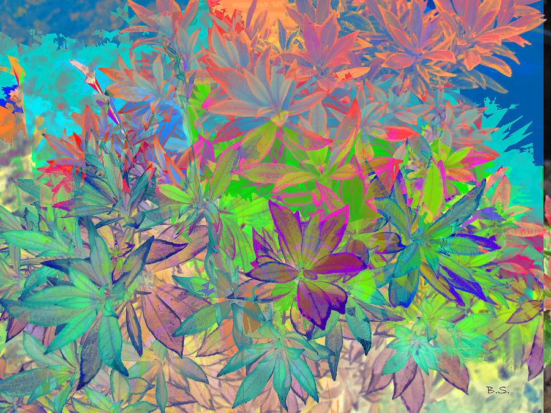
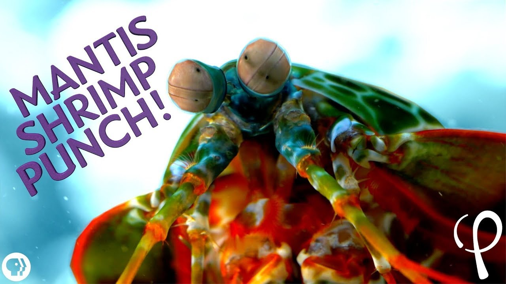

Fatos sobre o Stomatopoda
- Nome científico: Odontodactylus scyllarus
- Reino: Animalia
- Filo: Arthropoda
- Subfilo: Crustacea
- Classe: Malacostraca
- Subclasse: Hoplocarida
- Ordem: Stomatopoda
Cones fotoreceptores
Cones são um tipo de célula fotosensível que nos permite enxergar as cores. Seres humanos possuem 3 tipos de cones, que são responsáveis por criar todas as combinações de cores que somos capazes de enxergar. O Stomatospoda, por outro lado, possui 16 tipos de cones, o que faz com que ele seja capaz de enxergar um número muito maior de cores do que nós.
Apêndice raptorial
O Stomatopoda possui 2 apêndices raptoriais à frente do corpo, que podem acelerar tão rapidamente como um disparo de um rifle calibre .22. Além disso, esses apêndices podem, em menos de 3 milésimos de segundo, atingir uma presa com 1.500 Newtons de força.
Trata-se de um movimento tão rápido que a água ao redor dele entra em ebulição. Ainda que ele não acerte o seu alvo, a onda de choque, que produz uma temperatura de milhares de Kelvin , ainda assim é capaz de matá-los.
Desmembramento é o principal meio pelo qual o Stomatopoda mata sua presa, golpeando-a até que se parta em pedaços e seu interior comestível se torne acessível. Seus membros são tão resilientes que pesquisadores têm estudado sua estrutura celular para o desenvolvimento de armaduras militares.
Por que não os encontramos em aquários?
Aquários não costumam abrigá-los porque eles tendem a eliminar outras criaturas com as quais compartilham o tanque. Ademais, eles são capazes de quebrar o vidro do aquário em que se encontram.
Referências bibliográficas
- Artigo da Wikipedia sobre o Stomatopoda.
- Comic strip do The Oatmeal sobre o Stomatopoda.
- Flowers of many colours de Brian Sunderland.
- Thumbnail do video Mantis Shrimp Punch at 40,000 fps! - Cavitation Physics do canal Physics Girl.
- Thumbnail do video Can a Huge Mantis shrimp crack a glass aquarium do canal Majestic AquariumsTV.